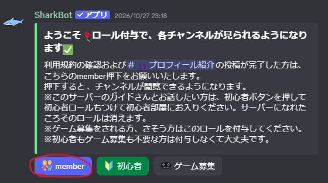
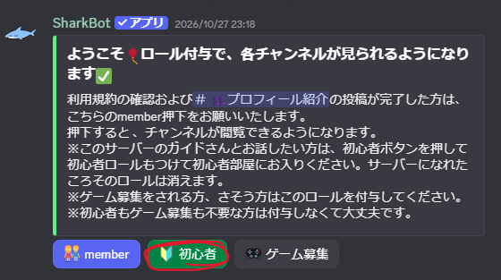

WELCOME TO PLANET CAT
新規参加者向け
まずはルールを確認して、サーバーに参加しましょう。
惑星猫へようこそ！参加したら、次の手順に沿って設定を進めてください。 チャンネルの使い方は チャンネルガイド で確認できます。
1. 利用上の注意を読む
はじめに 利用上の注意 を開き、サーバーのルールを確認してください。
2. ルールチャンネルで「member」を押す
Discordのルールチャンネルにある案内メッセージの下部に、 「member」ボタンがあります。ルールを読んだら、このボタンを押してください。 チャンネルが見られるようになります。

3. プロフィールを投稿する
「プロフィール紹介」チャンネルで、自己紹介を投稿してください。 簡単な内容でも大丈夫です。
4. 「初心者」ボタンを押す
「member」ボタンと同じ案内メッセージにある「初心者」ボタンを押してください。

5. チャンネルガイドを確認する
最後に チャンネルガイド を読んで、各チャンネルの使い方を確認しましょう。